The antenna is where a radar meets free space. It shapes the energy going out, gathers the echo coming back, and sets much of what the whole system can resolve. This chapter walks through antenna functions and characteristics, then the main antenna families used in radar: the half-wave dipole, the parabolic dish, cosecant squared patterns, phased arrays, and monopulse and conical-scan tracking antennas.
An antenna transmits or receives electromagnetic waves. It is a transducer that converts electromagnetic waves into high-frequency electrical currents and vice versa. The mechanical sizes of an antenna are fractions of the wavelength used. There are antennas more than a hundred meters in length using long-wave frequencies, and antennas a few millimeters long for microwave ranges. This chapter deals specifically with the antennae used in radar installations.
An antenna is a device that acts as a transformer to provide a good match between the feeding line, as a local source of power, and free space. If the antenna is not matched to free space, power will be reflected back toward the transmitter, resulting in a loss of radiated power. The antenna is one of the most critical parts of the radar system. It performs the following essential functions:
The basic performance of radar can be shown to be proportional to the product of the antenna area, or aperture, and the mean transmitted power. Investment in the antenna therefore brings direct results in the system performance. Taking these functions and the required efficiency into account, two arrangements are generally applied:
Due to the special design of the antenna, the radiation density can be concentrated in certain spatial directions. A measure of the directivity of a lossless antenna is the antenna gain. It is closely associated with the directivity of the antenna. In contrast to directivity, which only describes the directional properties of the antenna, the antenna gain also takes the efficiency of the antenna into account. It therefore indicates the actual radiated power. This is usually smaller than the power provided by the transmitter. Since this power is easier to measure than the directivity, the antenna gain is used more often. Under the assumption that a lossless antenna is considered, the directivity can be set equal to the antenna gain.
A reference antenna is used to define the antenna gain. In most cases, the reference antenna is a lossless hypothetical omnidirectional radiator (isotropic radiator) that radiates uniformly in all directions, or a simple dipole antenna, which can also serve as a reference at least in the plane being considered.
For the antenna to be measured, the radiation density (power per unit area) at a point at a certain distance is determined and compared with the value obtained using the reference antenna. The antenna gain is then the ratio of the two radiation densities. If, for example, a directional antenna generates 200 times the radiation density of an isotropic antenna in a certain spatial direction, the antenna gain G has the value 200, or 23 dB.
The antenna pattern is a graphical representation of the spatial distribution of the radiated energy of an antenna. Depending on the application, an antenna should only receive from a certain direction but should not pick up signals from other directions (for example, a TV antenna or a radar antenna); a car antenna, on the other hand, should be able to receive transmitters from all possible directions.
The desired directivity is achieved by the targeted mechanical and electrical construction of an antenna. Directivity indicates how well an antenna receives or transmits in a certain direction. It is shown in a graphical representation (antenna pattern) as a function of the azimuth angle (horizontal diagram) and the elevation angle (vertical diagram). Either a Cartesian or a polar coordinate system is used. The measured values in the graphical representation can have linear or logarithmic scales.
The radiation field of an antenna is composed of electric and magnetic lines of force. These lines of force are always at right angles to each other. The electric field determines the direction of polarization of the wave. When a single-wire antenna is used to extract energy from a passing radio wave, maximum pickup results when the antenna is oriented in the same direction as the electric field. The oscillations of the electric field may be oriented in a single direction (linear polarization), or the oscillation direction of the electric field may rotate as the wave travels (circular or elliptical polarization).
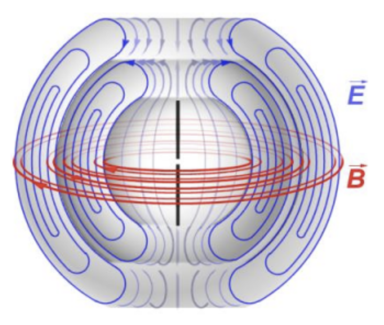
Vertically and horizontally mounted receiving antennas are designed to receive vertically and horizontally polarized waves, respectively. Changes in polarization therefore cause changes in the received signal level due to the inability of the antenna to receive polarization changes. Two planes of polarization are mainly used:
Linear polarization can take all planes, but besides the horizontal and vertical planes only those positions. When a single-wire antenna is used to extract energy from a passing radio wave, maximum pickup results when the antenna is oriented in the same direction as the electric field. Thus a vertical antenna is used for efficient reception of vertically polarized waves, and a horizontal antenna is used for reception of horizontally polarized waves.
Circular polarization has the electric lines of force rotating through 360 degrees with every cycle of RF energy. Circular polarization arises from two 90-degree phase-shifted incoming signals, and also from plane-polarized antennae moving 90 degrees simultaneously. The electric field was chosen as the reference field because the intensity of the wave is usually measured in terms of the electric field intensity (volts, millivolts, or microvolts per meter). In some cases the orientation of the electric field does not remain constant. Instead, the field rotates as the wave travels through space. Under these conditions both horizontal and vertical components of the field exist and the wave is said to have elliptical polarization.
Circular polarization can be right-handed or left-handed. A circularly polarized wave is reflected by a spherical raindrop in the opposite sense to the transmission. On reception, the antenna rejects waves of the opposite sense of circular polarization, thereby minimizing the detection of rain. The reflection from the target will have significant components in the original polarization sense because, unlike rain, aircraft are not spherical. The strength of the target signal is therefore enhanced relative to rain.
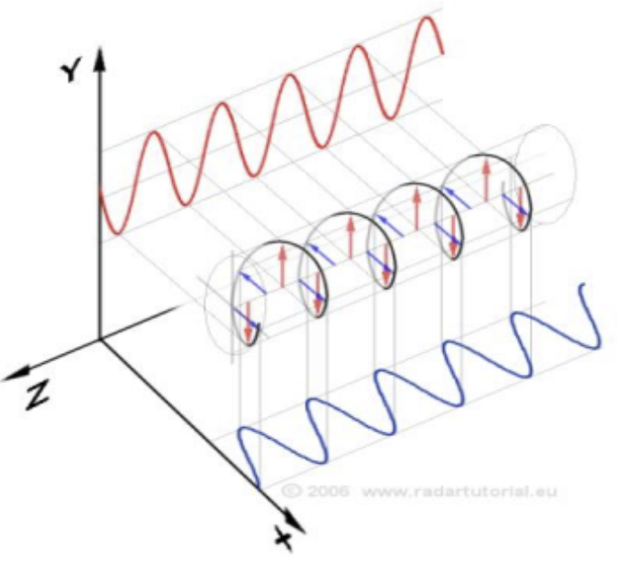
For maximum absorption of energy from the electromagnetic fields, the receiving antenna must be located in the same plane of polarization. If a wrongly polarized antenna is used, considerable losses arise, in practice between 20 and 30 dB. When strong weather clutter appears, air traffic controllers prefer to switch on circular polarization. In this case the hiding effect of the targets by the weather clutter is decreased.
A half-wave antenna (referred to as a dipole, hertz, or doublet) consists of two lengths of wire, rod, or tubing, each one-quarter wavelength long at a certain frequency. It is the basic unit from which many complex antennas are constructed. For a dipole, the current is maximum at the center and minimum at the ends. Voltage is minimum at the center and maximum at the ends.
Energy may also be fed to the half-wave antenna by dividing the antenna at its center and connecting the transmission line from the final transmitter output stage to the two center ends of the halved antenna. Since the antenna is now fed at the center (a point of low voltage and high current), this type of feed is known as center-feed or current-feed. The point of feed is important in determining the type of transmission line to be used.
Standing waves of current and voltage arise similarly to those in a parallel oscillating circuit. However, unlike the isotropic radiator with a gain of exactly 1, the half-wave antenna already has a gain of about 1.5, with the maximum radiation coming from it in a direction perpendicular to the antenna axis.
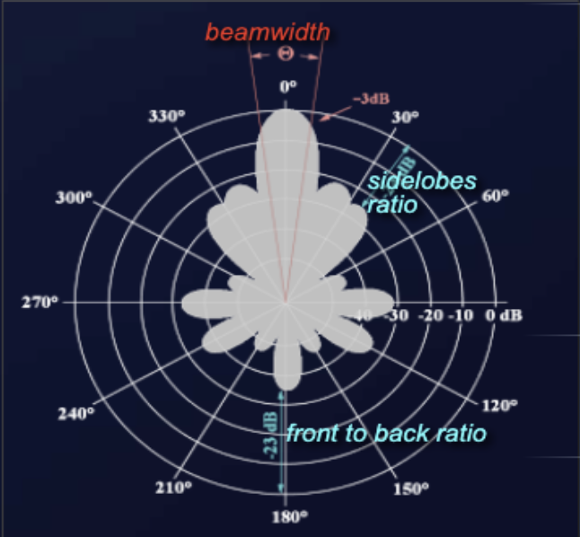
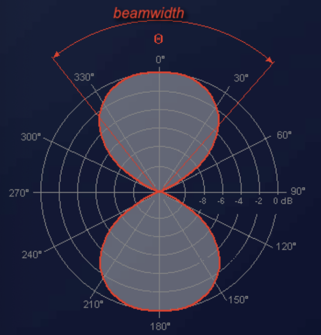
The half-wave dipole has also arisen from a simple oscillating circuit. Imagine the condenser plates of the oscillating circuit bent apart a little. The capacity is reduced, but the condenser remains a condenser. As the plates move further apart, the lines of force of the electrical field have to cover a greater and greater distance. The form of the condenser plates can no longer be recognized. The lines of force of the electrical field go over into free space. A half-wave dipole has arisen, which is now fed at the center.
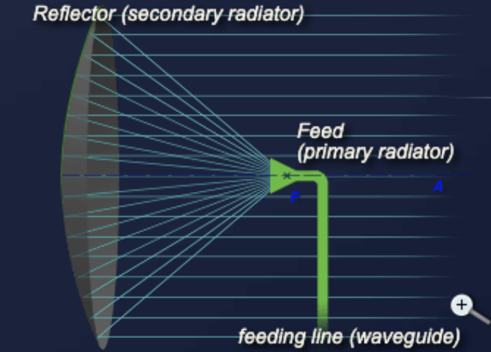
A parabolic reflector, dish, or mirror is a device used to collect or project energy such as electromagnetic waves. It alters incoming plane waves traveling along the same axis as the parabola into a wave that converges to the focus of the reflector.
The parabolic dish antenna is the form most frequently used in radar engineering. A dish antenna consists of one circular parabolic reflector and a point source situated at the focal point of the reflector. This point source is called the primary feed, or feed.
The circular parabolic (paraboloid) reflector is usually constructed of metal, often a frame covered by metal mesh on the inner side. The width of the slots of the metal mesh has to be less than one-tenth of the wavelength. This metal covering forms the reflector, acting as a mirror for the radar energy.
According to the laws of optics and analytical geometry, for this type of reflector all reflected rays will be parallel to the axis of the paraboloid, which ideally gives a single reflected ray parallel to the main axis with no sidelobes. The field leaves the feed horn with a spherical wavefront. As each part of the wavefront reaches the reflecting surface, it is shifted 180 degrees in phase and sent outward at angles that cause all parts of the field to travel in parallel paths.
This is an idealized radar antenna and produces a pencil beam. If the reflector has an elliptical shape, it will produce a fan beam. Surveillance radar use two different curvatures in the horizontal and vertical planes to achieve the required pencil beam in azimuth and the classical cosecant squared fan beam in elevation. The real antenna pattern of parabolic antennas has a conical form because of production irregularities. This main lobe may vary in angular width from one or two degrees in some radar to 15 to 20 degrees in others.
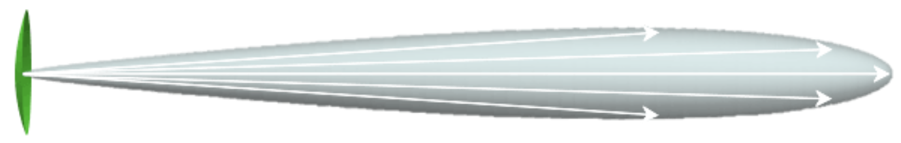
The radiation pattern of a parabolic antenna contains a major lobe, directed along the axis of propagation, and several small minor lobes. Very narrow beams are possible with this type of reflector.
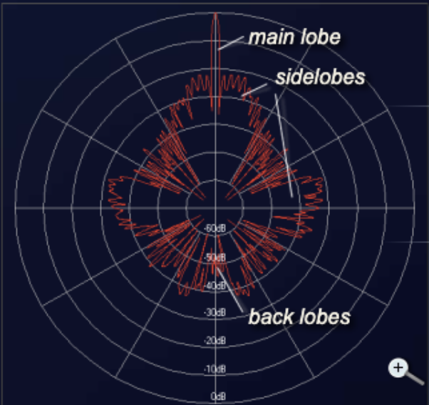
The gain G of an antenna with a parabolic reflector can be determined as follows.
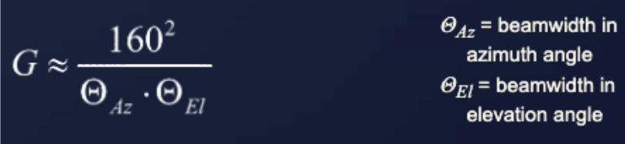
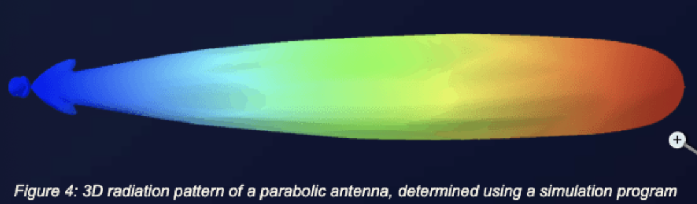
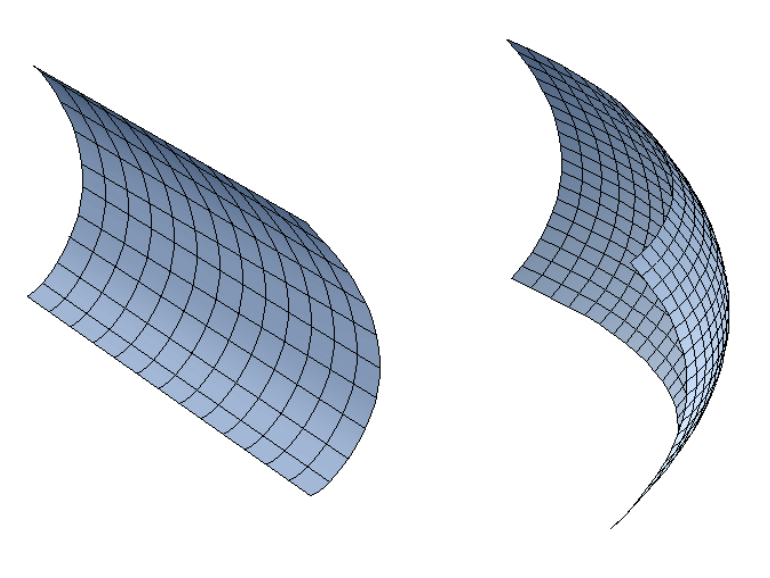
A single curvature, or 2D reflector, has a focal line instead of a focal point. The parabola is what you see when you look at the end of it, duplicated along a straight line. The Type 1022 is an example of this kind of reflector. At double curvature, or a 3D reflector, the surface is generated by a parabola revolving around its axis. The parabola can be seen from every aspect angle.
Antennas with a constant-height pattern or cosecant squared pattern (abbreviated CSC squared) are specially designed for air-surveillance radar sets. These permit an adapted distribution of the radiation in the beam and cause a more ideal space scanning. This antenna pattern can achieve the required elevation coverage where the received power is independent of the radar range for a constant-height target. It is a means of achieving a more uniform signal strength at the receiver input as a target moves at a constant height within the beam.
There are a few variation possibilities to obtain a cosecant squared pattern in practice:
Deviating shape of the parabolic reflector. In practice, a cosecant squared pattern can be achieved by deforming a parabolic reflector. A radiator at the focal point of a parabolic reflector produces a relatively sharply bundled radiation lobe, since the rays leave the reflector parallel in the ideal case. To obtain the cosecant squared pattern, part of the radiated energy must be turned upward. One possibility is a lower bending of the top of the reflector, so that the part of the rays which falls on the less-bent area is reflected up. An analogous method is to bend the lower part of the reflector more intensely.
The lobe of the radiator is weaker toward the margins, so the margins of the reflector are illuminated less than the center. Because the rays turned upward do not carry a large power density, the maximum range at higher elevation is limited. The ideal pattern is a nearly rectangular shape with rounded corners. In reality, the diagram is superposed with sidelobes, mainly at the back at higher elevation angles. The shape of these back sidelobes merges into a nearly parabolic slope, which provides in the near range an additional gain required for constant echo strength after the sensitivity time control.
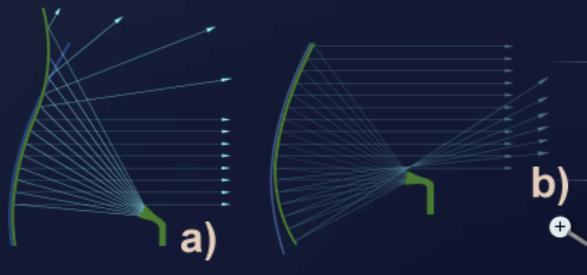
Stacked beam cosecant squared pattern. A cosecant squared pattern is achieved by two or more horns feeding a parabolic reflector. Every feed horn already emits directionally. If the transmit power is distributed unevenly across the radiating elements, the antenna pattern approaches a cosecant squared pattern. By using several receiving channels, a height allocation is also possible. The targets can then be assigned to beams with a defined elevation. The cosecant squared pattern is not restricted to parabolic reflectors; it can also be realized with other kinds of antennas. With an antenna array of Yagi antennas, the pattern is achieved by the interference of the direct wave with the part reflected at the earth's surface.
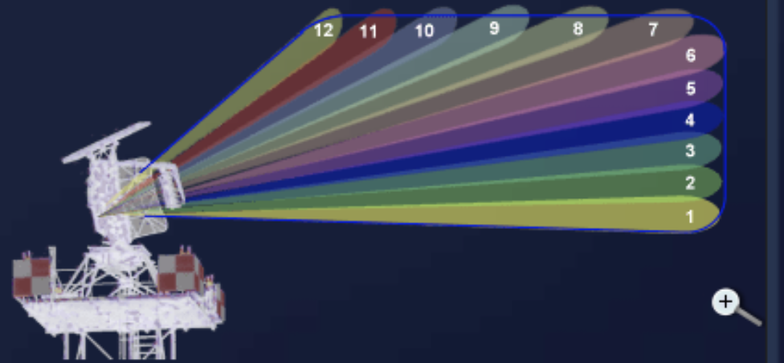
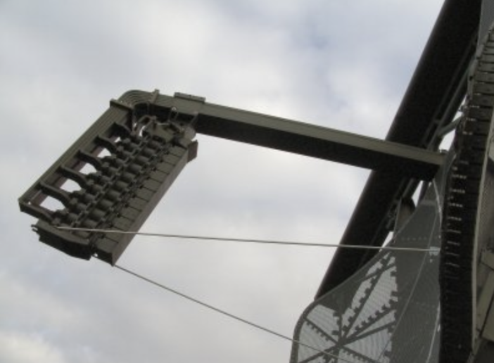
A phased array antenna is an array antenna whose single radiators can be fed with different phase shifts. As a result, the common antenna pattern can be steered electronically. Electronic steering is much more flexible and requires less maintenance than mechanical steering of the antenna.
The principle of this antenna is based on the effect of interference, that is, a phase-dependent superposition of two or, usually, several radiation sources. In-phase signals amplify each other and counter-phase signals cancel each other out. So if two radiators emit a signal in the same phase, the signal is amplified in the main direction and attenuated in the secondary directions.
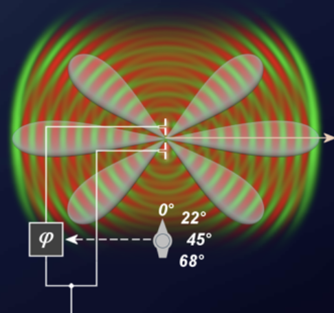
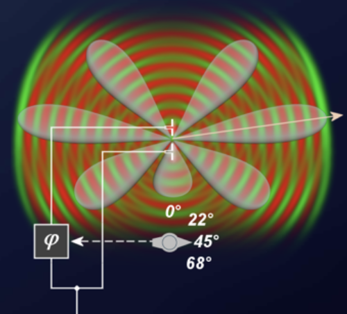
If the signal to be transmitted is routed through a phase-regulating module, the direction of radiation can be controlled electronically. This is not possible indefinitely, however, because the effectiveness of this antenna arrangement is greatest in a main direction perpendicular to the antenna field, while extreme tilting of the main direction increases the number and size of unwanted sidelobes and reduces the effective antenna area. The sine theorem can be used to calculate the ideal phase shift.
Any type of antenna can be used as a radiator in a phased array. The single radiators must be controlled with a variable phase shift so that the main direction of radiation can be changed continuously. To achieve high directivity, many radiators are used. Older antenna systems may consist of over 1,500 radiators whose received signals are combined with analog solutions. More modern multifunction radar sets use digital beamforming in their receivers.
Advantages:
Disadvantages:
These phased array antennas consist of lines, which are commonly controlled by a single phase shifter. Only one phase shifter is needed per group of radiators in a line. A number of linear arrays arranged vertically on top of each other form a flat antenna. The advantage is a simple arrangement; the disadvantage is beam steering only in a single plane. Examples include the PAR-80 (horizontal beam deflection), the FPS-117 (vertical beam deflection), and the large vertical aperture (LVA), an SSR antenna with a fixed beam pattern.
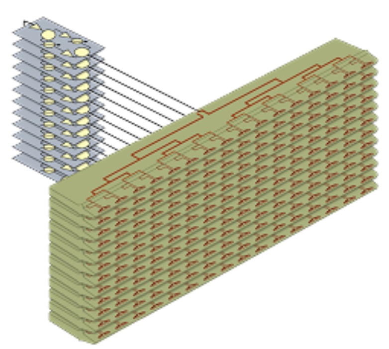
These phased array antennas consist completely of single elements with a phase shifter per element. The elements are arranged like a matrix; the flat arrangement of all elements forms the entire antenna. The advantage is that beam deflection is possible in two planes; the disadvantage is the large number of phase shifters. Examples given are the AN-FPS-85 and the Thomson Master-A.
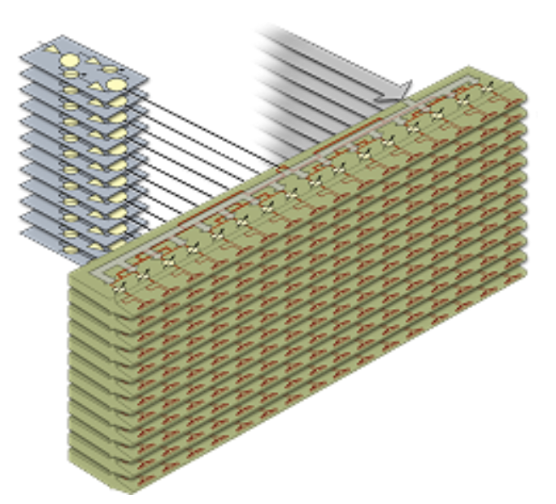
The frequency scanning array is a special case of the phased array antenna in which the beam steering is controlled by the transmitter frequency without the use of any phase shifter. The beam steering is a simple function of frequency. This type of phased array antenna was often used in older radar sets.
A vertical antenna array is fed serially by a so-called snake feed. At the main frequency F1, all radiators get a part of the power of the same phase through structurally identical detours, which cause a phase shift of n times 360 degrees. All radiators therefore radiate in the same phase, and the resulting beam is perpendicular to the antenna plane. If the transmitter frequency is increased by a few percent, the constructively defined length of the detour lines is no longer correct. At a higher frequency, the wavelength decreases and the detour line is now a bit too long, so a phase shift appears from one radiator to the next. The resulting beam for the F2 frequency is steered upward by the angle theta-s.
Although this type of beam steering is very simple, it is limited to a few permanently installed frequencies. In addition to susceptibility to interference, the radar set cannot use pulse compression because its bandwidth is too low.
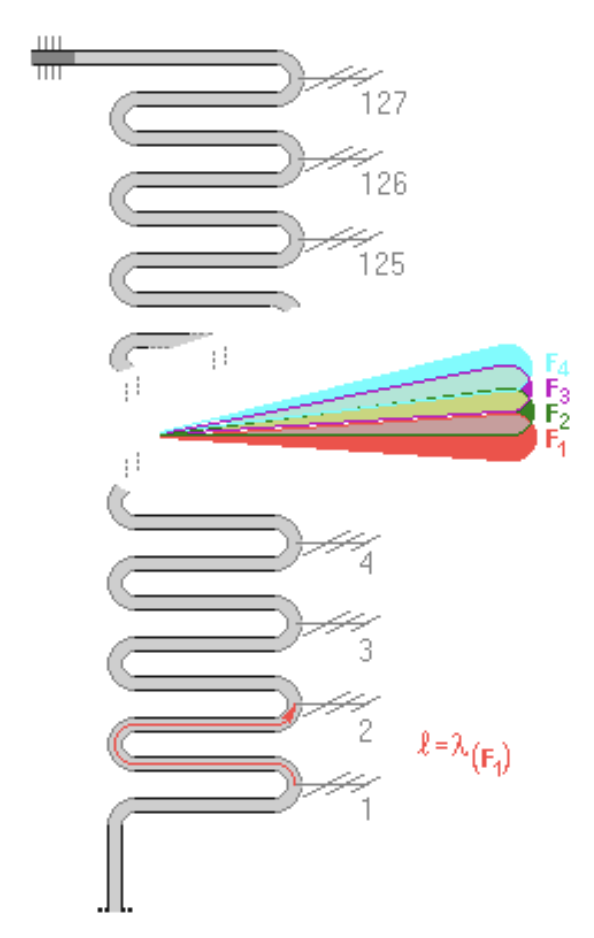
Phase shifters that switch different detour lines are faster than regulators. A 4-bit switching phase shifter creates 16 different phase angles between 0 degrees and 337.5 degrees in steps of 22.5 degrees. The inductivities (the thin meander wires acting as lowpass filters) can also be recognized in the switching voltage supplies for the pin diodes.
Since this phase shifter module works both for the transmitting path and for the reception path, branching between the two paths is attached with pin diode switches at the entrance and exit of the module. The same data word must be used for the reception time and for the transmitting moment. The radiator transmitting the latest phase shift first receives the echo signal; its phase shifter must have the largest detour line for forming the diagram in a decided direction, and the same detour line is needed for a summation of the received energy.
The phase shifter routes the microwave signal supplied to each radiating element through cables of varying lengths. The cables delay the wave, thereby shifting the relative phase of the output. The switches are fast pin diode switches. A central computer calculates the proper phase delay for each radiating element and switches in the appropriate combination of phase-shifter pathways.
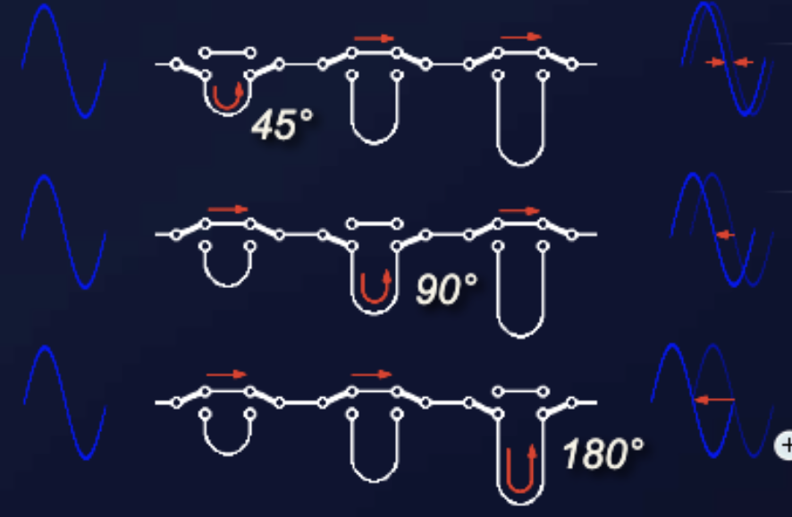
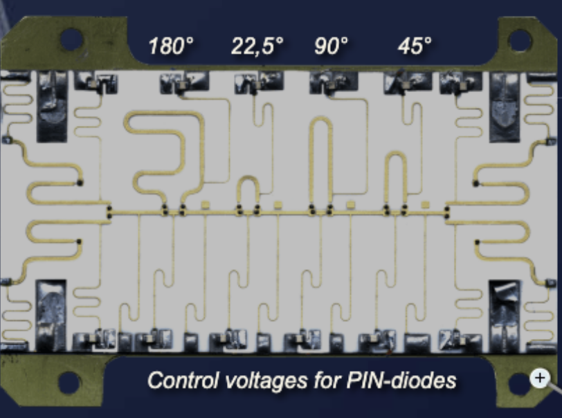
Under this concept, antennas built up as an array are combined and given a special feeding method: the single antenna elements are not always switched together in phase. For different purposes, various sums and differences can be formed from the received energy. In the primary radar set, all antenna elements are fed in phase and the radiation patterns are summarized; certain groups are only summarized at the reception time, and their sums or differences feed their own receive channels. All signals are then compared as a video-processor function and their difference is used to estimate the azimuth of the target more exactly. The antenna can therefore operate at a much lower rate of hits per scan.
In the secondary radar set, an impulse group is transmitted on the sum channel and a single impulse on the difference channel. The monopulse antenna is used for sidelobe suppression. The monopulse antenna is not its own basic model, but a combination of a logarithmic-periodic antenna and a phased array antenna.
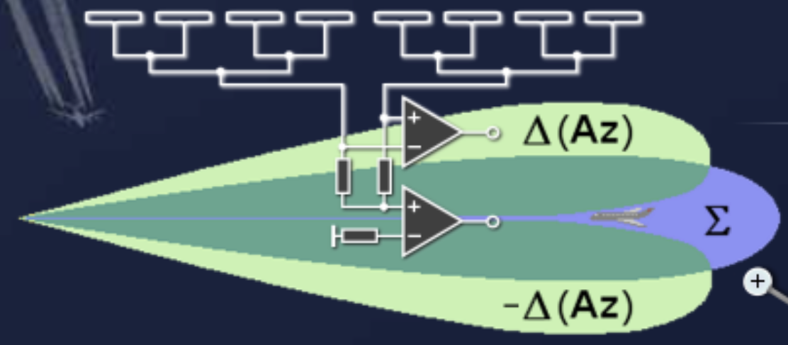
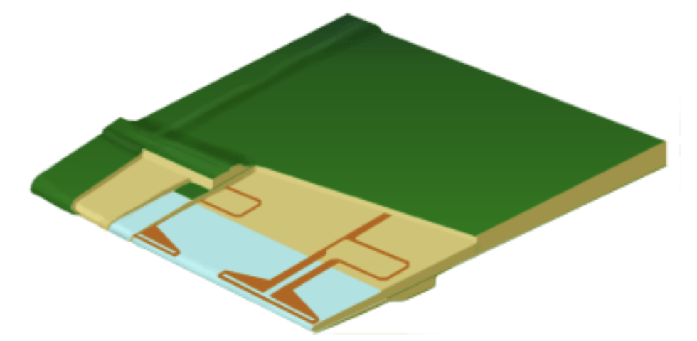
Monopulse radar find their origin in tracking systems. Since the late 1970s, the monopulse principle has been adapted to suit PSR and SSR systems and is in common operational use worldwide today.
A target is seen by radar from the moment it enters the main antenna beam or is illuminated by the transmitted beam. A search radar always makes an error in determining the direction of the target because it assumes the target is in the direction of the axis of the main beam. This error is of the order of the beamwidth of the main beam. A crude way of determining angular position is to move the antenna past the target direction and note the pointing direction that gives the maximum echo amplitude. Unfortunately, the estimated azimuth position is affected by thermal noise errors and target fluctuation errors (scintillation). The target fluctuation error is due to the change in the cross section of the target during the time on target of the antenna, which distorts the envelope of the reflected pulse train.
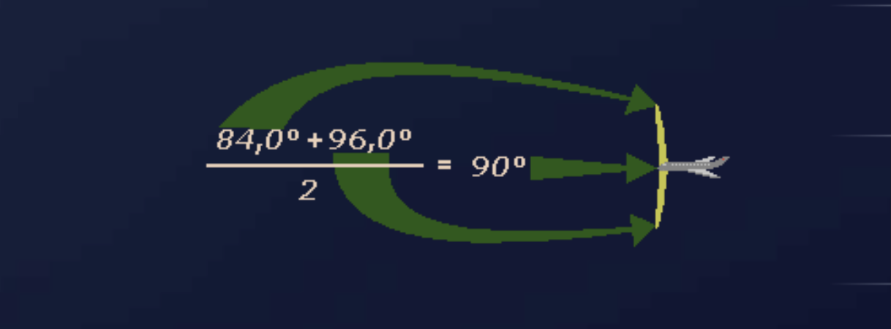
Monopulse gives much better target azimuth measurements than the simple maximum-amplitude estimate. It can operate at a much lower interrogation rate to benefit others in the environment. Monopulse systems usually contain enhanced processing to give better-quality target code information. A single pulse is sufficient for a monopulse bearing measurement, hence the term monopulse.
The elements in the linear antenna array are divided into two halves. These two separate antenna arrays are placed symmetrically in the focal plane on each side of the axis of the radar antenna (often called the boresight axis). In transmission mode, both antenna arrays are fed in phase and the radiation pattern is the sum, or sigma, diagram. In reception mode, an additional receiving path is possible. From the received signals of both separate antenna arrays, it is possible to calculate the sum (like the transmitted sum diagram) and the difference, the so-called delta azimuth diagram. Both signals are then compared as a reply-processor function and their difference is used to estimate the azimuth of the target more exactly.
The angle between the axis of the antenna (boresight axis) and the direction of the target is known as the off-boresight angle (OBA). The elevation angle is also measured in 3D radar as a third coordinate, using the same procedure with the antenna divided into an upper half and a lower half. The second difference channel is called delta elevation.
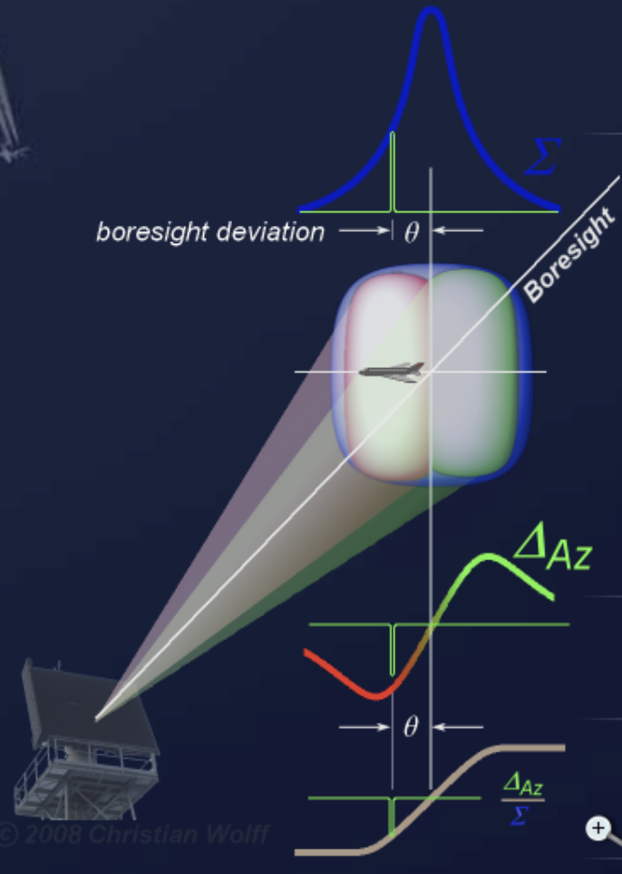
The sum signal is I + II + III + IV. The difference signal in azimuth is (I + IV) minus (II + III). The difference signal in elevation is (I + II) minus (III + IV). An auxiliary signal, omega, is also used. This channel for the compensation of sidelobes uses a practically omnidirectional antenna with a wide pattern, and it also serves to detect active jamming. All these signals need their own receiver channel. Modern 3D radar sets have at least four parallel receiver channels. If the primary radiators of the monopulse antenna consist of feed horns, the distribution of the received signals can be performed with a monopulse duplexer.
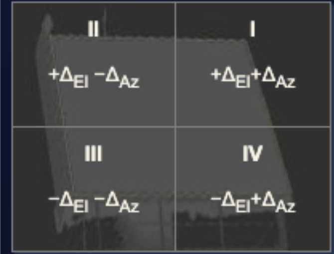
In a typical configuration, the left antenna group produces the upper half of the difference beam and the right antenna group produces the bottom half of the difference diagram. The combination of the two groups produces the sum beam. With this arrangement, the information about the angular position of the target is carried in the difference of the voltage levels from the two antenna groups. If the target were below the center axis, the voltage from the right antenna array would be greater than the voltage from the left array; if the target were above the center axis, the left array voltage would be greater. Since the angle information is determined from the voltage amplitudes, this type is termed an amplitude-comparison monopulse antenna.
With a phased array antenna, the sum diagram and both difference halves point in the same direction, and a phase shift steers the antenna diagram. In this case the angle information is not carried in the relative amplitudes of the difference beams; instead it is determined from the phase positions of the individual antennas or antenna arrays. Phased array antennas are therefore also termed phase-comparison monopulse antennas. Old Russian VHF radar such as the P-3 and its successors up to the P-12 performed an elevation angle measurement with phase comparison between two antenna planes. That procedure was later abandoned because it degraded the maximum range. In modern air traffic control radar such as the ASR-NG, this phase comparison method has had a renaissance, using three superimposed horn radiators, with modern digital signal processing avoiding range loss by dividing the received power into more channels.
Some older target tracking radar use the conical scan to determine the exact target direction. A conical scan pattern can be generated by using a rotating feed driven by a motor in the housing at the rear of the dish. The axis of the radar lobe is made to sweep out a cone in space; the apex of this cone is at the radar transmitter antenna or reflector. At any given distance from the antenna, the path of the lobe axis is a circle. Within the useful range of the beam, the inner edge of the lobe always overlaps the boresight axis.
Assume the conical scan is used for target tracking. If the target is exactly on the central axis, a relatively constant but very small echo is always received. But if the target is even a little away from this axis, the levels change during an antenna beam rotation. For example, if the target is too far to the left, the echo signal shows a maximum when the antenna radiator points to the left and a minimum when it points to the right. A computer evaluates this information and generates control signals for the servomechanism of the antenna, which moves a little to the left until a constant level of echo signal is received again. In this way, the direction to the target is determined automatically and very precisely in lateral and elevation angles.
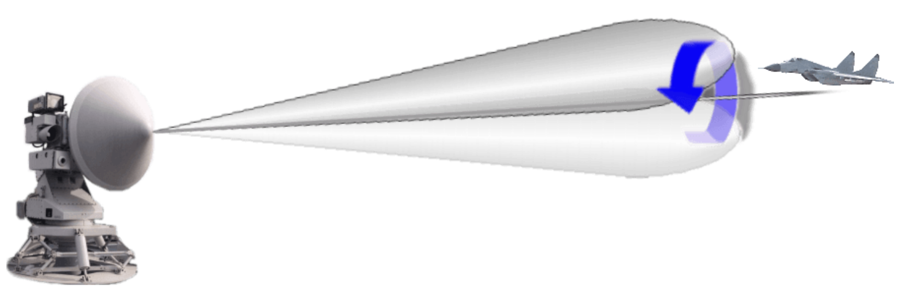
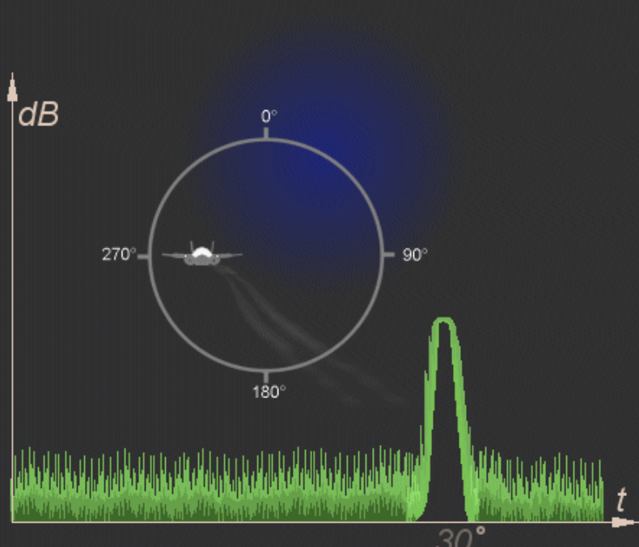
It is also possible to perform a conical scan only while the radar is in receive mode, called COSRO (conical scan on receive only). Different antennas are used for transmitting and receiving. Only the receiving antenna uses the conical scan, and the antenna diagram of the transmitting antenna must be wide enough to cover all received directions of the receiving antenna.
Check your understanding. Five quick questions on antenna types, auto-scored, with your answers saved on this device.